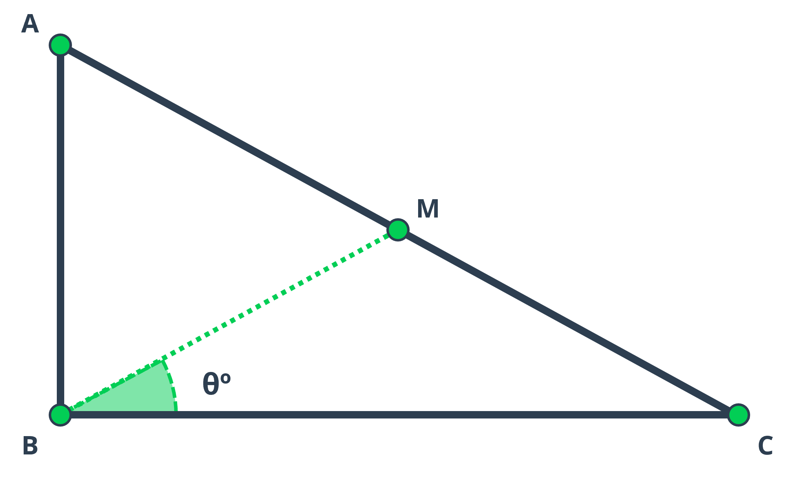
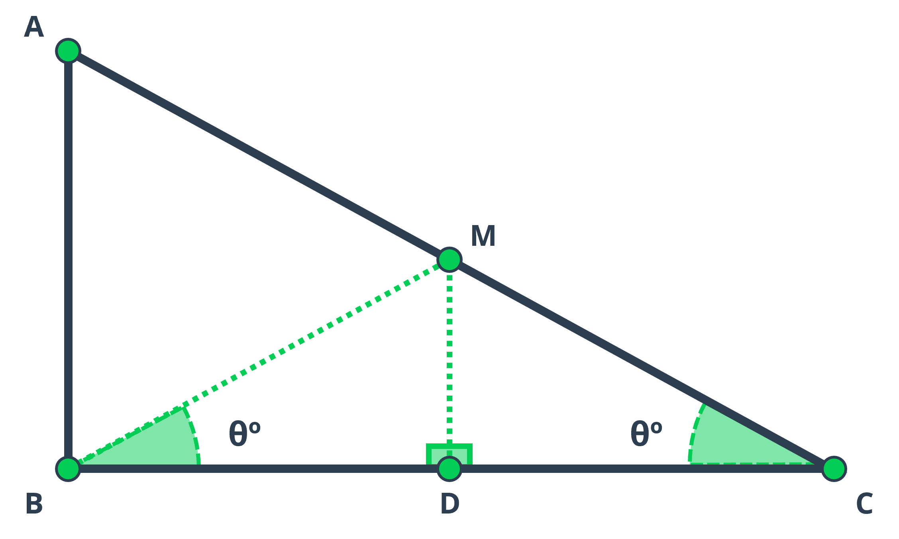

Python | Find the angle
Challenge introduction
This challenge revolves around conducting geometric evaluation and analysis of a mathematical problem and subsequently crafting an efficient Python code to solve it. From a coding standpoint, this challenge serves as excellent practice for utilizing mathematical and trigonometric functions in Python.
The problem is sourced from HackerRank and is available at the following link. I recommend attempting to solve the challenge independently before reviewing the provided solution.
Problem statement
You are given the following right triangle where \(\small\angle ABC = 90^{\circ}\) and M is the midpoint of the hypothenuse AC.
You are given the lengths AB and BC and your task is to find \(\small\angle MBC\) (angle \(\small\theta^{\circ}\) as shown in the figure) in degrees.
Input format.
- The first line contains the length of side AB, where \(\small 0<AB≤100\).
- The second line contains the length of side BC, where \(\small 0<BC≤100\).
- Lengths ABa and BC are natural numbers.
Output format.
Output \(\small\angle MBC\) in degrees rounded to the nearest integer
Sample input:
\(10\)
\(10\)
Sample output:
\(45^{\circ}\)
Solution
A straightforward approach to tackle this problem involves considering the sub-triangle \(\small\triangle{MBC}\) and subsequently determining the angle \(\small\angle MBC\).
To accomplish this, we initially require the lengths of the sides MC and BM for angle calculation. The length of MC is easily obtained as half of \(\small\triangle{ABC}\) hypotenuse. Calculating BM involves applying the formula for the median of a right triangle, which is given by \(\small\frac{1}{2}\sqrt{2·(AB^2 + BC^2) - AC^2}\).
Once both side lengths are known, we can determine the desired angle using the formula applicable to solving an SSS (side-side-side) triangle,
denoted as:
\(\small\displaystyle\cos(\angle MBC)=\frac{BC^2 + BM^2 - MC^2}{2·BC·BM}\).
Please, note that the degrees symbol is added as a unicode string since the evaluator of the problem does not accept non ASCII characters.
import math
if __name__ == '__main__':
ab, bc = int(input()), int(input())
ac = math.sqrt(ab**2 + bc**2)
mc = ac / 2
bm = 0.5 * math.sqrt(2 * (ab**2 + bc**2) - ac**2)
angle = math.degrees(math.acos((bc**2 + bm**2 - mc**2) / (2 * bc * bm)))
degrees = u"\u00b0"
print(f'{angle:.0f}{degrees}')
However, incorporating a bit more geometrical analysis into the problem can yield a solution that is notably simpler and more elegant.
By connecting the midpoint (M) of the hypotenuse to the midpoint of side BC, denoted as D, we create segment MD, which serves as a midsegment. According to the triangle midsegment theorem, we know that MD is parallel to AB. Consequently, both \(\small\angle MDC\) and \(\small\angle MDB\) become right angles.
Additionally, this segment generates two sub-triangles: \(\small\triangle{MDC}\) and \(\small\triangle{MDB}\). Since \(\small\angle MDC\) equals \(\small\angle MDB\), MD serves as a shared side, and BD equals DC (as D is the midpoint of BC). Based on the SAS (side-angle-side) postulate, both triangles are congruent, implying that angle \(\small\angle MBD\) equals angle \(\small\angle MCD\). Please, refer to the image below for better visualization.
Given that the original triangle \(\small\triangle{ABC}\) is right, we can calculate \(\small\angle ACB\) instead of \(\small\angle MCD\) using the arctangent of the sides AB and BC, which are the side lengths provided by the evaluator in this challenge.
import math
if __name__ == '__main__':
ab, bc = int(input()), int(input())
angle = math.degrees(math.atan2(ab, bc))
degrees = u"\u00b0"
print(f'{angle:.0f}{degrees}')